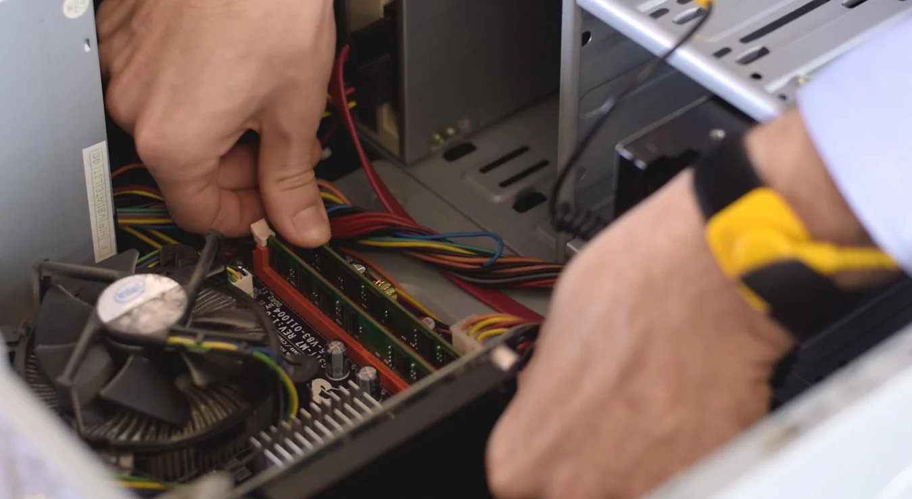

Somos un equipo de estudiantes de informática con ganas de aprender.
Creamos este emprendimiento en abril del 2024 como una manera de
profundizar nuestro conocimiento y ayudar a los demás.

Contáctanos
Si querés un presupuesto, tenés una consulta o querés más información
contáctanos por whatsapp, mail o mediante nuestras redes sociales.